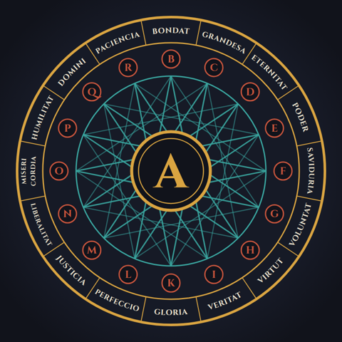
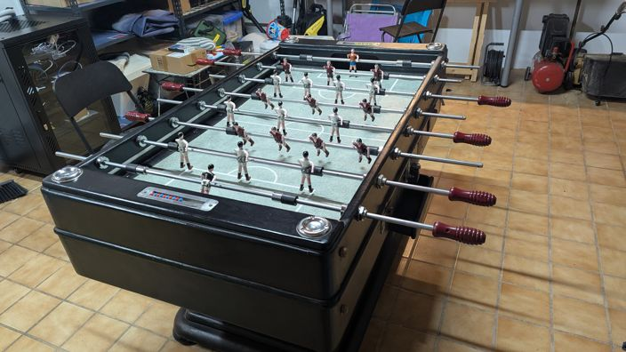
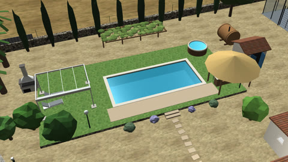
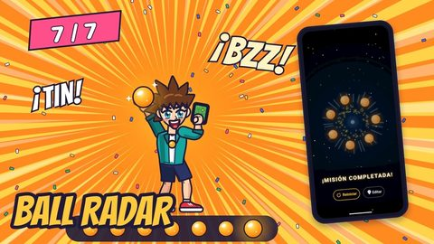
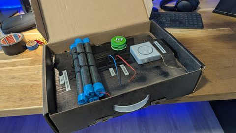

Ars Magna Lab
Máquinas para pensar, jugar y ayudar
Un canal de YouTube de Edu Herraiz sobre los proyectos que construye en Mallorca: domótica, apps y juegos, IA y divulgación. Cada vídeo cuenta cómo se hace, de la idea al resultado.
El nombre viene del Ars Magna de Ramon Llull, la máquina de razonar que ideó en el Puig de Randa.
Ver el canal en YouTube →Proyectos
-

Futbolín con Home Assistant
Un futbolín Córdoba antiguo y restaurado que cuenta los goles solo. Unas barreras de infrarrojos en los carriles avisan a un ESP32 que lleva la partida, y Home Assistant la convierte en un marcador de estadio en la tablet, con locutor, música y control por voz. Las tiras LED celebran cada gol. Todo va a batería y escondido en el mueble, sin tocar la portería.
-

Ars Domus
Tu casa en 3D a partir de un plano, unas fotos y datos públicos del terreno, para pasearla en el navegador. Guarda la casa actual y una propuesta de reforma, y se cambia de una a otra sin mover la cámara. Nada se modela a mano: Claude Code convierte las fuentes en datos y three.js los dibuja.
-

Ball Radar
Una gincana GPS para jugar al aire libre. Alguien esconde las 7 esferas caminando por un parque o por el barrio, y el resto tiene que encontrarlas guiándose por el radar. Hecha con Flutter para Android.
-

Bombshot
Juegos de fiesta que funcionan enteros dentro de un altavoz Home Assistant Voice PE, sin móvil ni pantalla. En la bomba, el altavoz dice un número, empieza un tictac de 30 segundos y hay que deducir qué cable cortar. El Tótem del Chamán es un Simon de cuatro elementos con luces y voz.